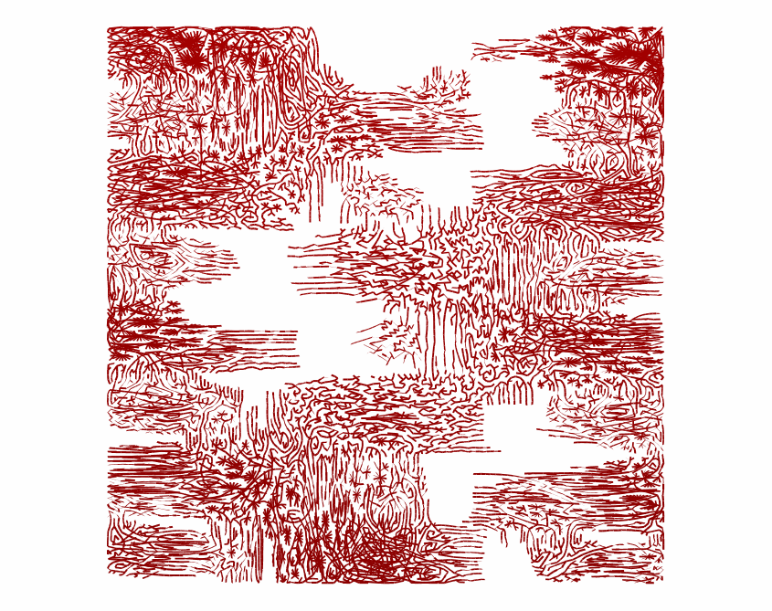

{% include JB/setup %}

<div class="free-page">
<p>Here is an entry point into my growing repository of generated art.

Please see my <a href="art/2016/09/14/on-generative-art">essay</a> in the blog too.</p>

<hr/>

<p>
&gt;&gt;
<a href="#contour">Contour figures</a> –
<a href="#fractal">Fractal procedures</a> –
<a href="#context">Sense of the environment</a>
</p>

<h1 id="contour">Contour figures</h1>
<p>When I think of drawing something alive,
it feels it almost must be done by hand (or by foot).</p>

<p>I'd like to simulate that expressiveness and richness of detail
that we associate with artistic craft.
I ask questions from myself about computer images:
what would enable them to speak in a non-obvious way,
with aesthetic or emotional appeal?
Is that kind of voice merely an illusion that breaks around the next corner
when a feigned artefact is revealed for what it only is?
Could there be authentically erotic, or humorous, or touching,
generative art?</p>

<p>These may seem rhetoric or blatant questions,
but they are interesting, as a challenge, and as a way of understanding
more about art.
</p>

<div class="center">
  <a href="assets/img/art/2016-09-24-23-45-contour-figure-ABA.png">
  
</a></div>
<p class="img-text">The Venus of Sine, variation ABA, 2016/09.</p>

<p>One way of relating to humanity is by forging links to past
art forms.
</p>
<p>This first one in a series of hominids
tries to highlight the emotional figurative aspect in generated images.
Its body is shaped by two overlayed sine functions.</p>

<div class="center">
  <a href="assets/img/art/2016-09-18-14-32-contour-figure-colossus-AAS.png">
  
</a></div>
<p class="img-text">Colossus with a Hat, variation AAS, 2016/09.</p>

<div class="center">
  <a href="assets/img/art/2016-09-18-14-20-contour-figure-tool-AAG.png">
  
</a></div>
<p class="img-text">Tool with a Human Head, variation AAG, 2016/09.</p>


<hr/>
<h1 id="fractal">Fractal procedures</h1>

<p>Fractals are an essential part of generative art,
but again, how would they relate to more general human experience,
outside of mathematical systems,
if such a relation is possible?
</p>
<div class="center">
  <a href="assets/img/art/2016-09-24-14-36-sierp-textp-subtri-b-ACU.png">
  
</a></div>

<div class="center">
  <a href="assets/img/art/2016-09-24-15-30-sierp-textp-corr-frac-landscape-ADK.png">
  
</a></div>

<div class="center">
  <a href="assets/img/art/2016-09-24-16-16-sierp-textp-l3-B-corr-frac-landscape-AAC.png">
  
</a></div>
<p class="img-text">Three Painted Menger Sponges, 2016/09.</p>


<hr/>
<h1 id="context">Sense of the environment</h1>

<p>One thing that comes naturally to the eye is recognizing relatively
uniform arrays of things. In cave paintings figures stand side by side,
distinct from each other, possessing their own space on the wall.
This uniform randomness is not straightforward to maintain.
</p>

<p>In the nature it represents itself in many things that are
formed gradually by immense energies:
the waves, the wind, the rocks, grains of sand, the rhythm of the trees in a forest.
</p>

<p>Once again, my own intuitive reaction to recurring and rhytmic processes
seems the key part.
Do they yield harmony and pleasure, or something else?
What I find rhytmically stimulating is probably
that for a good reason. Not unlike music,
generative art creates a possibility
to explore rhytmical interactions and the overlapping of different rhythms.
</p>

<div class="center">
  <a href="assets/img/art/2016-09-19-22-33-autumn-day-ABY.png">
  
</a></div>
<p class="img-text">Autumn Day, variation ABY, 2016/09.</p>

<div class="center">
  <a href="assets/img/art/2016-09-28-11-58-park-never-ending-story-B-ABD.png">
  
</a></div>
<p class="img-text">The Neverending Story, variation ABD, 2016/09.</p>

<div class="center">
  <a href="assets/img/art/2016-09-27-11-46-park-medieval-ornamental-unsymmetric-spheres-B-AEF.png">
  
</a></div>
<p class="img-text">Medieval decoration, variation AEF, 2016/09.</p>

<div class="center">
  <a href="assets/img/art/2016-09-27-00-43-park-graphical-progression-J-E-AMC.png">
  
</a></div>
<p class="img-text">Traditional rug perspective, variation AMC, 2016/09.</p>


<!--
<div class="center">
  <a href="assets/img/art/2016-09-21-22-11-mindist-AAS.png">
  
</a></div>
<p class="img-text">Retro, Retry (variation AAS), 2016/09.</p>
-->
<!-- <div class="center">
  <a href="assets/img/art/2016-09-23-21-19-pac-tablecloth-splatter-paint-AAV.png">
  
</a></div>
<p class="img-text">Splatter painting, variation AAV, 2016/09.</p> -->


</div>
